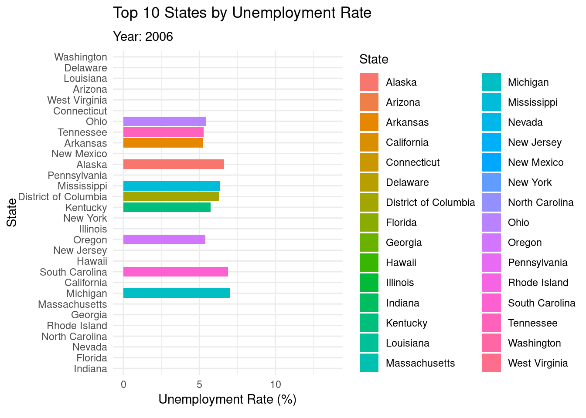

Comparing Unemployment Rates Across U.S. States During Economic Recessions
Author
Swetha
Published
November 14, 2024
Introduction
This project analyzes unemployment rate fluctuations across U.S. states during two major economic downturns: the 2008 financial crisis and the COVID-19 pandemic. By leveraging spatial and temporal data, we map and compare unemployment rate changes before, during, and after these recessions. The insights from this analysis may highlight patterns in economic impact and recovery across states, informing potential strategies for future recession management.
Materials and Methods
Data Sources
U.S. Bureau of Labor Statistics (BLS): Monthly state-level unemployment data.
U.S. Census Bureau: State population estimates.
Data Cleaning and Preparation
The following code loads, cleans, and aggregates the data. ### Load libraries
if (!requireNamespace("gganimate", quietly =TRUE)) install.packages("gganimate")
# Downloading packages -------------------------------------------------------
- Downloading gganimate from CRAN ... OK [2 Mb in 0.34s]
- Downloading transformr from CRAN ... OK [162.2 Kb in 0.26s]
- Downloading tweenr from CRAN ... OK [443.8 Kb in 0.23s]
- Downloading sf from CRAN ... OK [3.6 Mb in 0.27s]
- Downloading classInt from CRAN ... OK [487.3 Kb in 0.22s]
- Downloading e1071 from CRAN ... OK [582.2 Kb in 0.35s]
- Downloading proxy from CRAN ... OK [171.5 Kb in 0.25s]
- Downloading s2 from CRAN ... OK [2.1 Mb in 0.26s]
- Downloading wk from CRAN ... OK [1.7 Mb in 0.35s]
- Downloading units from CRAN ... OK [354.5 Kb in 0.23s]
- Downloading lpSolve from CRAN ... OK [365.4 Kb in 0.31s]
Successfully downloaded 11 packages in 5.5 seconds.
The following package(s) will be installed:
- classInt [0.4-10]
- e1071 [1.7-16]
- gganimate [1.0.9]
- lpSolve [5.6.22]
- proxy [0.4-27]
- s2 [1.1.7]
- sf [1.0-19]
- transformr [0.1.5]
- tweenr [2.0.3]
- units [0.8-5]
- wk [0.9.4]
These packages will be installed into "~/work/final-project-SwethaSakhamuri/final-project-SwethaSakhamuri/renv/library/linux-ubuntu-jammy/R-4.4/x86_64-pc-linux-gnu".
# Installing packages --------------------------------------------------------
- Installing tweenr ... OK [installed binary and cached in 0.34s]
- Installing proxy ... OK [installed binary and cached in 0.2s]
- Installing e1071 ... OK [installed binary and cached in 0.22s]
- Installing classInt ... OK [installed binary and cached in 0.22s]
- Installing wk ... OK [installed binary and cached in 0.25s]
- Installing s2 ... OK [installed binary and cached in 0.34s]
- Installing units ... OK [installed binary and cached in 0.3s]
- Installing sf ... OK [installed binary and cached in 0.59s]
- Installing lpSolve ... OK [installed binary and cached in 0.21s]
- Installing transformr ... OK [installed binary and cached in 0.64s]
- Installing gganimate ... OK [installed binary and cached in 0.69s]
Successfully installed 11 packages in 4.4 seconds.
# Downloading packages -------------------------------------------------------
- Downloading maps from CRAN ... OK [2.9 Mb in 0.32s]
Successfully downloaded 1 package in 0.55 seconds.
The following package(s) will be installed:
- maps [3.4.2.1]
These packages will be installed into "~/work/final-project-SwethaSakhamuri/final-project-SwethaSakhamuri/renv/library/linux-ubuntu-jammy/R-4.4/x86_64-pc-linux-gnu".
# Installing packages --------------------------------------------------------
- Installing maps ... OK [installed binary and cached in 0.26s]
Successfully installed 1 package in 0.32 seconds.
if (!requireNamespace("ggplot2", quietly =TRUE)) install.packages("ggplot2")if (!requireNamespace("tidyverse", quietly =TRUE)) install.packages("tidyverse")if (!requireNamespace("gifski", quietly =TRUE)) install.packages("gifski", type ="binary")
# Downloading packages -------------------------------------------------------
- Downloading gifski from CRAN ... OK [956.9 Kb in 0.22s]
Successfully downloaded 1 package in 1.8 seconds.
The following package(s) will be installed:
- gifski [1.32.0-1]
These packages will be installed into "~/work/final-project-SwethaSakhamuri/final-project-SwethaSakhamuri/renv/library/linux-ubuntu-jammy/R-4.4/x86_64-pc-linux-gnu".
# Installing packages --------------------------------------------------------
- Installing gifski ... OK [installed binary and cached in 0.24s]
Successfully installed 1 package in 0.28 seconds.
library(dplyr)
Attaching package: 'dplyr'
The following objects are masked from 'package:stats':
filter, lag
The following objects are masked from 'package:base':
intersect, setdiff, setequal, union
library(ggplot2)library(gganimate)library(sf)
Linking to GEOS 3.10.2, GDAL 3.4.1, PROJ 8.2.1; sf_use_s2() is TRUE
── Conflicts ────────────────────────────────────────── tidyverse_conflicts() ──
✖ dplyr::filter() masks stats::filter()
✖ dplyr::lag() masks stats::lag()
✖ purrr::map() masks maps::map()
ℹ Use the conflicted package (<http://conflicted.r-lib.org/>) to force all conflicts to become errors
library(gifski)
Load the monthly dataset
data <-read.csv("data/States_Unemploment_Data.csv")
Data Cleaning Steps
# 1. Drop duplicate rowsdata <- data %>%distinct()# 2. Remove rows with any missing valuesdata <- data %>%drop_na()# 3. Replace placeholder values ("NA", "unknown") with NAdata[data =="NA"] <-NAdata[data =="unknown"] <-NA# 4. Identify and clean inconsistent values (e.g., if certain columns should only contain specific ranges or categories)# Example: Ensure `Unemployment_rate` is within a realistic range (0 - 100)data <- data %>%filter(Unemployment_rate >=0& Unemployment_rate <=100)# Check for remaining missing values after cleaningsummary(data)
State Year Period
Length:7344 Min. :2006 Length:7344
Class :character 1st Qu.:2009 Class :character
Mode :character Median :2012 Mode :character
Mean :2014
3rd Qu.:2019
Max. :2022
Labor_Force_Participation_Ratio Employment_Participation_Ratio
Min. :52.60 Min. :41.70
1st Qu.:61.80 1st Qu.:57.90
Median :64.70 Median :60.80
Mean :64.79 Mean :61.03
3rd Qu.:68.10 3rd Qu.:64.50
Max. :74.70 Max. :72.40
Labor_Force Employment Unemployment Unemployment_rate
Min. : 281549 Min. : 272394 Min. : 6835 Min. : 1.900
1st Qu.: 779246 1st Qu.: 745945 1st Qu.: 40342 1st Qu.: 3.800
Median : 2056275 Median : 1920110 Median : 105112 Median : 5.100
Mean : 3084129 Mean : 2890735 Mean : 193394 Mean : 5.825
3rd Qu.: 3733868 3rd Qu.: 3477744 3rd Qu.: 234754 3rd Qu.: 7.600
Max. :19592298 Max. :18732265 Max. :3015308 Max. :30.600
Latitude Longitude
Min. :19.90 Min. :-155.67
1st Qu.:35.52 1st Qu.:-105.03
Median :39.55 Median : -89.40
Mean :39.56 Mean : -93.34
3rd Qu.:43.30 3rd Qu.: -78.66
Max. :63.59 Max. : -69.45
Aggregate data by State and Year to calculate the annual averages
The following animated map shows the unemployment rate across states over time. The color scale represents unemployment rate levels.
us_map <-map_data("state")annual_data$region <-tolower(annual_data$State)# Merge map data with your datasetmap_data <-inner_join(us_map, annual_data, by =c("region"="region"))
Warning in inner_join(us_map, annual_data, by = c(region = "region")): Detected an unexpected many-to-many relationship between `x` and `y`.
ℹ Row 1 of `x` matches multiple rows in `y`.
ℹ Row 1 of `y` matches multiple rows in `x`.
ℹ If a many-to-many relationship is expected, set `relationship =
"many-to-many"` to silence this warning.
This line plot illustrates unemployment rate trends by state over time.
ggplot(annual_data, aes(x = Year, y = Unemployment_rate, color = State, group = State)) +geom_line(size =1) +labs(title ="Unemployment Rate Over Time by State", x ="Year", y ="Unemployment Rate (%)") +theme_minimal() +transition_reveal(Year)
Warning: Using `size` aesthetic for lines was deprecated in ggplot2 3.4.0.
ℹ Please use `linewidth` instead.
`geom_line()`: Each group consists of only one observation.
ℹ Do you need to adjust the group aesthetic?
`geom_line()`: Each group consists of only one observation.
ℹ Do you need to adjust the group aesthetic?
Bar Chart Race of Top 10 States by Unemployment Rate
A bar chart race visualizes the top 10 states with the highest unemployment rate each year.
top_states <- annual_data %>%group_by(Year) %>%top_n(10, Unemployment_rate) %>%arrange(Year, -Unemployment_rate)# Bar Chart Race Codeggplot(top_states, aes(x =reorder(State, -Unemployment_rate), y = Unemployment_rate, fill = State)) +geom_bar(stat ="identity") +coord_flip() +labs(title ="Top 10 States by Unemployment Rate",subtitle ="Year: {frame_time}",x ="State",y ="Unemployment Rate (%)" ) +theme_minimal() +transition_time(Year) +ease_aes('linear')

Conclusion
The graphical analysis of U.S. unemployment rates during the 2008 financial crisis and the COVID-19 pandemic highlights significant trends and disparities in economic resilience across states.
From the animated map visualization, we observe that states with diverse, service-based economies (such as California and New York) experienced sharp rises in unemployment during both crises. However, these states tended to recover faster due to a shift toward remote work and flexible job structures, especially during COVID-19.
States heavily reliant on specific sectors like tourism and manufacturing (e.g., Nevada and Michigan) faced prolonged high unemployment rates. This suggests that sector-specific economic dependencies can heighten vulnerability during global economic disruptions.
The line plot of unemployment trends over time reveals that while the 2008 financial crisis caused a relatively uniform spike in unemployment across states, the COVID-19 pandemic led to more varied impacts, with certain states being hit much harder than others. This difference may be attributed to varying public health restrictions, digital adaptability, and government support measures across states.
The bar chart race visualization, showing the top 10 states with the highest unemployment rates over time, highlights that certain states consistently appeared in the high-unemployment category across crises. This indicates persistent structural challenges that may require targeted policy interventions.